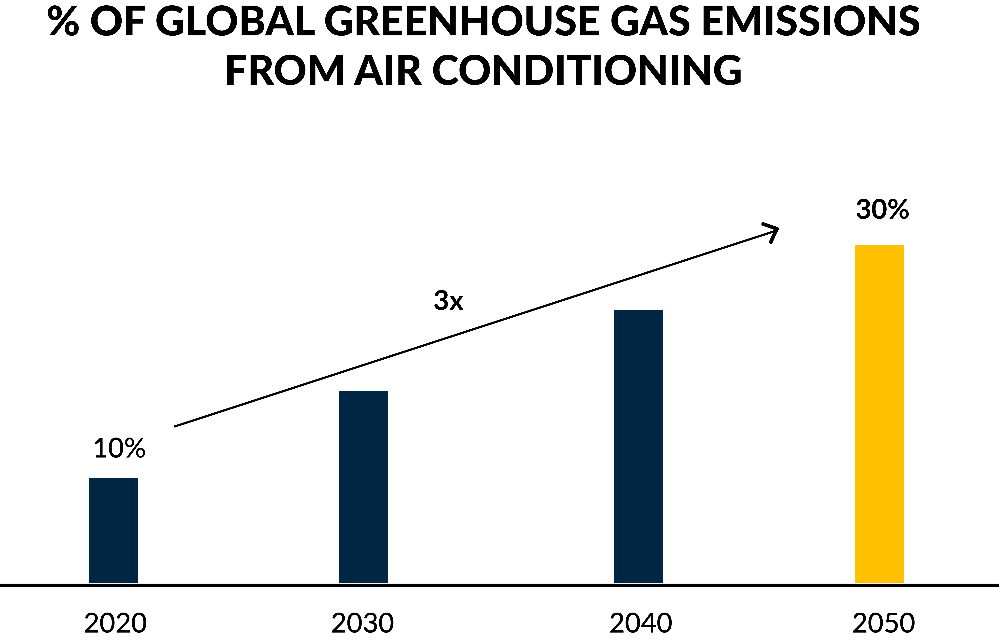
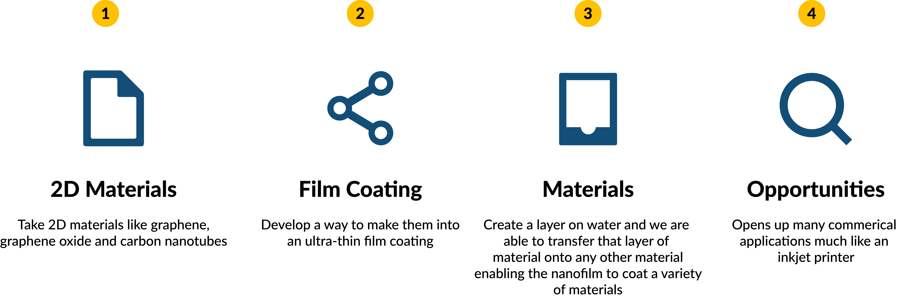

WBR: What pushed you to launch your own business in the clean tech industry?
Evelyn: I have spent 15 years in the clean tech space, working as an engineer and in business development. In 2018, I attended a sustainability conference in Vancouver, where I heard several keynote speakers that inspired me to take action and find out how to make a bigger impact. At that point I began looking for a project that would be the right fit.
A few months later, I saw the NRCan/MaRS Women in Cleantech Challenge posted. The NRCan/MaRS Women in Cleantech Challenge is a program that supports women for 2.5 years to build a company. The competition was meant for women innovators, but at the time I did not have a technology of my own. I connected with MaRS and they said I could still apply if I licensed a technology. And so I began my search for a breakthrough technology to commercialize. I approached the University of Waterloo Commercialization Office, and they agreed to support my application, through a license agreement. After reviewing the cleantech related patents available, I decided on Evercloak’s core technology, which is a way to large-area ultra-thin nanofilms. I chose this particular technology for three reasons: the scalability of the technology is a unlocking an existing commercial barrier for ultra-thin nanomaterials, I’ve worked with end users who have expressed interest in properties of these materials and I’d worked successfully with the prime inventor of the technology in the past (Dr. Michael Pope) who is now the CTO and co-founder of Evercloak.)
WBR: Which environmental issues do you plan to tackle with the implementation of this technology?
Evelyn: The initial use case of our technology is to significantly reduce greenhouse gas emitted by the air conditioning market. Currently, 10% of global greenhouse gas emissions are from air conditioning and this percentage is expected to triple by 2050.
We’re looking to significantly reduce the energy used by air conditioning units through developing a membrane that efficiently removes moisture from the air. To cool air, air conditioning systems have to lower air temperature, and remove water vapour in the air. The current method that air conditioners use to remove water vapour is by condensing it, which makes it a very energy intensive process. In humid regions, air conditioners also have to overcool the air in order to remove the water vapour, and more energy is needed to heat the air back to a comfortable temperature. Thus, our technology has been able to resolve this problem. We humidify ahead of the cooling system, without condensation or overcooling, enabling more than 50% energy savings.
WBR: Where do you first plan on applying your nanofilm technology?
Evelyn: We have a pilot project with a large North American power producer. They’re helping us to validate our membrane material for this use case. Our first application will be in a power plant situation where humidity is a big challenge as it causes corrosion and mould. We will then be targeting industrial and commercial dehumidification space and residential applications through air conditioning by partnering with a strategic HVAC Original Equipment Manufacturer.
WBR: How has your 15 years of experience in the design of industrial waste-water treatment systems helped you in launching Evercloak?
Evelyn: My experiences span working as a consulting engineer, a design engineer at a wastewater technology company, building and growing strategic innovation platforms as well as helping hundreds of companies successfully access and move innovations forward. My diverse experiences have allowed me to rapidly move this company forward because I understand the innovation, funding and cleantech landscape.
WBR: How has MaRS helped Evercloak’s growth and success?
Evelyn: I would not be here without the NRCan/MaRS Women in Cleantech Challenge. The initiative has provided me with the opportunity to lead and develop a company, providing critical support including mentors, access to federal labs to scale our technology and connections to a broader cleantech network. There are 6 women in the cohort and we provided customized programming to help us grow our business. Examples of programming include; accounting, sales, professional development, media training, non-verbal communication, manufacturing courses, and so on. Mentorship is also among the various supports. The program gives us critical knowledge and exposure to support us in our roles as CEO.
WBR: What was the process for producing your nanofilm material and ensuring its physical properties?
Evelyn: The technology that we are commercializing is a platform technology. We take materials like graphene, graphene oxide and carbon nanotubes, that already exist, and have developed a new way to make them into ultra-thin film coatings. Right now, there is no other way to make these thin film coatings in large areas and at such low costs. This is our core technology. It’s similar to an inkjet printer printing on water. We create a nanomaterial layer on water and we are able to transfer that layer of material onto any other material. The physical properties of the nanofilm naturally come with the materials with which we are using to manufacture the nanofilm. Our manufacturing process enables the nanofilms to coat a variety of materials which is currently not possible and opens up many commercial applications.
WBR: If you are crowned the winner of the Women in cleantech challenge, what will you use the prize money for?
Evelyn: The prize money will definitely help to scale the company and advance the technology further to secure follow-on funding. In a year from now, we will be ready for testing our field demonstration units and to show clients, partners and investors that our company is ready to scale with, seeking follow-on growth funding from investors.
WBR: Do you have any advice that you would give to students at the University of Waterloo with an interest in entrepreneurship?
Evelyn: It depends on the type of person and your background. My network really helped me to succeed. I have received so much help from so many different people to get to where I am right now. This would not have been possible without my strong network and so my advice is to get out and meet new people, help people and learn from people.
WBR: What advice would you give young women interested in starting their own entrepreneurial venture?
Evelyn: I would say to just go for it. If you’re interested in something, go and do it and know that there is nobody else better to do it than you. Ask yourself, “Why not me? Why not you? Why shouldn’t you?” Just go out and do what you’re passionate about.
To learn more about the Evercloak and Evelyn, you can visit their website at https://www.evercloak.com.